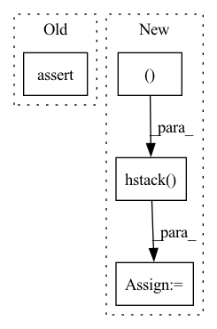

Pattern ID :13700

Before Change
in_wave_path = join(in_dir, utt_id + "-wave.npy")
assert exists(in_wave_path)
assert np.any(has_dynamic_features)
streams = get_static_features(
feats.reshape(1, -1, feats.shape[-1]),
num_windows,
After Change
voc_feats = np.hstack((mgc, lf0, vuv, bap)).astype(np.float32)
elif len(streams) == 3:
mel, lf0, vuv = streams[0], streams[1], streams[2]
voc_feats = np.hstack((mel, lf0, vuv)).astype(np.float32)
voc_feats_path = join(out_dir, utt_id + "-feats.npy")
np.save(voc_feats_path, voc_feats, allow_pickle=False)
In pattern: SUPERPATTERN
Frequency: 3
Non-data size: 4
Instances
Fragment ID: 45823411
Project Name: r9y9/nnsvs
Commit Name: c38ecfe9b09a4a793a7ba4b53bedbecc0d3dc255
Time: 2022-10-30
Author: zryuichi@gmail.com
File Name: nnsvs/bin/prepare_voc_features.py
M Class Name: AnonimousClass
N Class Name: AnonimousClass
M Method Name: _prepare_voc_features(6)
N Method Name: _prepare_voc_features(6)
M Parent Class:
N Parent Class:
M File Name: nnsvs/bin/prepare_voc_features.py
N File Name: nnsvs/bin/prepare_voc_features.py
M Start Line: 29
M End Line: 44
N Start Line: 38
N End Line: 49
'>
Before Change
super().__init__(name, id_)
def run(self, results: Dict[str, Any], resource: Resource):
assert results_available(results, "train", "model"), "Trained model must be present"
assert results_available(results, "train", "vectors"), "Vectors must be present"
assert results_available(results, "train", "labels"), "labels must be present"
predictions = results["train"]["result"]["model"].predict(results["train"]["result"]["vectors"])
After Change
def run(self, results: Dict[str, Any], resource: Resource):
task_results = {}
for split in ["train", "val", "test"]:
stacked_vectors = np.hstack((results["tfidf_featurize"]["result"][split]["vectors"],
results["glove_featurize"]["result"][split]["vectors"]))
predictions = results["train"]["result"]["model"].predict(
stacked_vectors)
report = classification_report(
results["dataset"]["result"][split]["labels"], predictions, output_dict=True)
'>
Fragment ID: 45823410
Project Name: fluidml/fluidml
Commit Name: 1e789cf21b7961ec070e6a1fd5696b9aec57f8c6
Time: 2020-12-24
Author: raj1514@gmail.com
File Name: examples/sklearn/without_gs.py
M Class Name: EvaluateTask
N Class Name: EvaluateTask
M Method Name: run(3)
N Method Name: run(3)
M Parent Class: Task
N Parent Class: Task
M File Name: examples/sklearn/without_gs.py
N File Name: examples/sklearn/without_gs.py
M Start Line: 111
M End Line: 118
N Start Line: 148
N End Line: 157
'>
Before Change
def run(self, results: Dict[str, Any], resource: Resource):
assert results_available(results, "train", "model"), "Trained model must be present"
assert results_available(results, "train", "vectors"), "Vectors must be present"
assert results_available(results, "train", "labels"), "labels must be present"
predictions = results["train"]["result"]["model"].predict(results["train"]["result"]["vectors"])
report = classification_report(results["train"]["result"]["labels"], predictions, output_dict=True)
task_results = {
After Change
def run(self, results: Dict[str, Any], resource: Resource):
task_results = {}
for split in ["train", "val", "test"]:
stacked_vectors = np.hstack((results["tfidf_featurize"]["result"][split]["vectors"],
results["glove_featurize"]["result"][split]["vectors"]))
predictions = results["train"]["result"]["model"].predict(
stacked_vectors)
report = classification_report(
results["dataset"]["result"][split]["labels"], predictions, output_dict=True)
'>
Fragment ID: 45823414
Project Name: fluidml/fluidml
Commit Name: 28f2885d3db0eb5555b308fbb33c428ff4fe1ff7
Time: 2020-12-24
Author: raj1514@gmail.com
File Name: examples/sklearn/with_gs.py
M Class Name: EvaluateTask
N Class Name: EvaluateTask
M Method Name: run(3)
N Method Name: run(3)
M Parent Class: Task
N Parent Class: Task
M File Name: examples/sklearn/with_gs.py
N File Name: examples/sklearn/with_gs.py
M Start Line: 110
M End Line: 117
N Start Line: 148
N End Line: 157